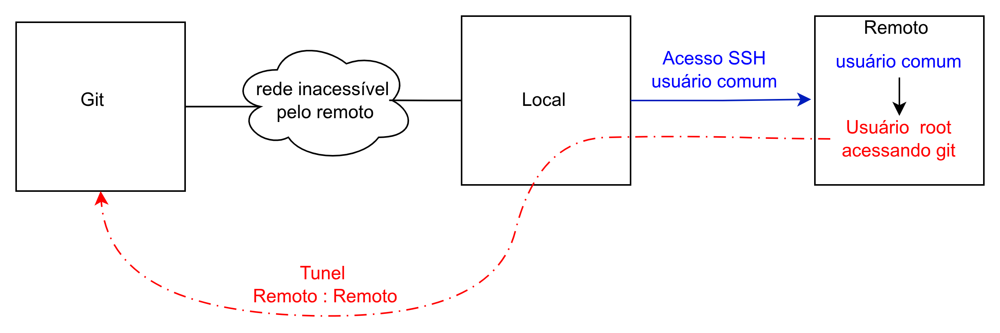
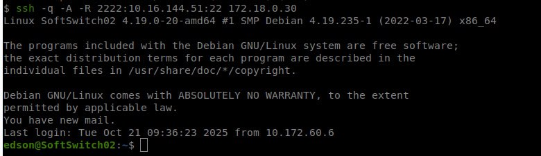
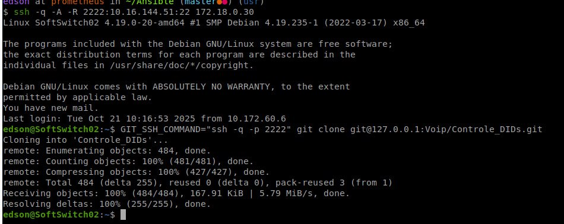
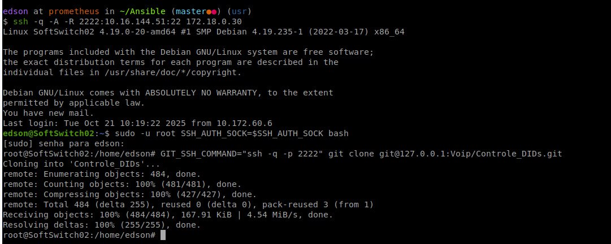

Root acessando Git de usuário comum via túnel SSH
Em alguns ambientes, uma máquina intermediária não possui acesso direto ao servidor Git. Nesses casos, é possível utilizar um túnel SSH reverso para encaminhar a conexão até o servidor Git, permitindo operações como git clone, git pull e git push sem alterar a topologia da rede.
Quando o acesso é realizado utilizando autenticação por chave pública, também é possível reutilizar o agente SSH (ssh-agent) da máquina de origem por meio do Agent Forwarding. Dessa forma, a chave privada permanece na estação de trabalho do usuário, sem necessidade de ser copiada para o servidor remoto.
Este documento demonstra como utilizar o encaminhamento de portas (SSH Port Forwarding) em conjunto com o encaminhamento do agente SSH (SSH Agent Forwarding) para permitir que um usuário remoto — inclusive o root — acesse um repositório Git utilizando a chave armazenada na máquina de origem.

1. Criar túnel SSH a partir da sua máquina local
Execute o comando abaixo para criar um túnel SSH encaminhando a porta local do Git para a máquina de destino:
ssh -A -R 2222:git.example.net:22 usuario@bastion.example.net
Exemplo de saída:

2. Clonar ou dar pull no repositório Git como usuário normal
Já dentro da máquina remota, execute:
GIT_SSH_COMMAND="ssh -p 2222" git clone git@127.0.0.1:infra/exemplo.git
Exemplo de saída:

GIT_SSH_COMMAND
O Git utiliza o cliente SSH padrão do sistema para estabelecer conexão com o servidor remoto.
Como neste procedimento o servidor Git está acessível através do túnel SSH criado na porta 2222, é necessário instruir o Git a utilizar essa porta em vez da porta padrão (22).
Isso é feito através da variável de ambiente:
GIT_SSH_COMMAND="ssh -p 2222"
Assim, todas as conexões iniciadas pelo Git serão realizadas utilizando o cliente SSH configurado para acessar o túnel local.
3. Executando como usuário root (se necessário)
Se precisar executar como root, primeiro exporte o agente SSH atual:
sudo -u root SSH_AUTH_SOCK=$SSH_AUTH_SOCK bash
E então clone ou faça pull normalmente:
GIT_SSH_COMMAND="ssh -p 2222" git clone git@127.0.0.1:infra/exemplo.git
Exemplo de saída:

SSH_AUTH_SOCK
Durante a conexão com a opção -A, o SSH encaminha o acesso ao ssh-agent da máquina de origem para a máquina remota.
Esse acesso é disponibilizado através da variável de ambiente:
SSH_AUTH_SOCK
Ao executar comandos com sudo ou iniciar uma sessão como root, essa variável normalmente deixa de existir, fazendo com que o usuário root perca acesso ao agente SSH encaminhado.
Ao iniciar uma sessão preservando o valor de SSH_AUTH_SOCK:
sudo -u root SSH_AUTH_SOCK=$SSH_AUTH_SOCK bash
o processo executado como root continua utilizando o mesmo agente SSH da sessão original, sem necessidade de copiar ou duplicar a chave privada.
Referência
Este procedimento segue a documentação "SSH - Port Forwarding"